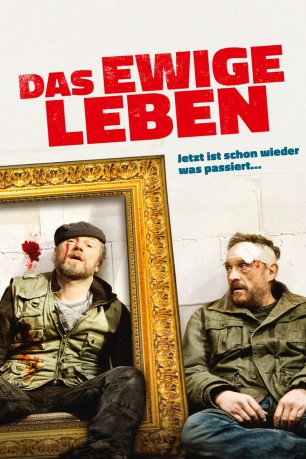

#4487 Das Ewige Leben
Alternativ: Life Eternal (Originaltitel)
 
 IMDB-Wertung: 7.3 / 10
IMDB-Wertung: 7.3 / 10  Metascore: 0
Metascore: 0 
Simon Brenner steht in seinem Leben vor einem riesigen Abgrund und braucht einen Ort, an dem er zur Ruhe kommen kann. Ihm fällt sein Elternhaus ein. Das befindet sich in Graz, der Stätte seiner Jugend, doch eigentlich hatte er dieser Zeit aus triftigen Gründen längst den Rücken gekehrt. Aber wo lässt es sich für einen Privatdetektiv besser eine ruhige Kugel schieben als in der Heimatstadt? Kaum angekommen, folgen bereits eine Reihe von Begegnungen mit vielen alten Gesichtern und das Geheimnis um eine Jugendsünde bahnt sich den Weg ans Licht. Nach einem Besuch von seinem alten „Jugendfreund“ Aschenbrenner sitzt nämlich plötzlich eine Kugel in Brenners Kopf, die er angeblich selbst dort hineinbefördert hat. Doch Brenner ist sich sicher, dass hier einiges nicht mit rechten Dingen zugeht. Dann wird auch noch einem weiteren alten „Jugendfreund“ Brenners, Köck, ein Besuch abgestattet, der für ihn tödliche Konsequenzen haben soll…
Jahr: 2015
Dauer: 122 Minuten
FSK: 12
Land: Österreich Studio: Majestic FilmverleihTonspuren:
Untertitel:
Auflösung: 1080p (1920x808) Größe: 5304 MB
Genre: Komödie, Krimi, Thriller
Regisseur: Wolfgang Murnberger
Drehbuch: Michael Ian Black
Soundtrack:
Darsteller:
 Tobias Moretti als Aschenbrenner
Tobias Moretti als Aschenbrenner Nora von Waldstätten als Dr. Irrsiegler
Nora von Waldstätten als Dr. Irrsiegler- Margarete Tiesel als Maritschi
 Johannes Silberschneider als Nachbar
Johannes Silberschneider als Nachbar- Laurence Rupp als Junger Aschenbrenner
 Josef Hader als Brenner
Josef Hader als Brenner- Roland Düringer als Köck
 Christopher Schärf als Heinz
Christopher Schärf als Heinz Hary Prinz als Pichler
Hary Prinz als Pichler- Sasa Barbul als Pinto
- Monika Klengel als Sekretärin PVA
- Gabriela Hiti als Schwester Corina
- Stefan Suske als Dr. Paumann
- Thomas Stipsits als Polizist
- Carmen Loley als Polizistin
- Thomas Frank als Pfleger Thomas
- Lorenz Kabas als Priester
- Helene Stupnicki als Junge Maritschi
- Harry Lampl als Junger Brenner
- Wolfgang Rauh als Junger Köck
- Daniel Langbein als Saarinnen
- Christian Strasser als Sanitäter
- Hanus Polak Jr. als Einbahnfahrer
- Helmut Köpping als Barkeeper
- Marija Barbul als Pintos Mutter
- Radisa Barbul als Jerome
- Martin Horvath als Rudi
- Monika Bauermann-Grichter als Putzfrau
- Thomas Anton als Security Guard
- Erika als Kater
- Hermes als Erzähler
- Wolf Haas als Passant , uncredited
- Paul Hassler als Mann in Bar , uncredited
Datei: X:\4-Tetralogie(A-K)\Brenner\Ewige Leben, Das (2015, FSK12, 1920x808).mkv seit 26.09.2016
Festplatte: HD Collection-3(N-Z)-6(A-Z)
 Es gibt insgesamt 7 Filme in der Gruppe '4-Tetralogie(A-K)\Brenner'
Es gibt insgesamt 7 Filme in der Gruppe '4-Tetralogie(A-K)\Brenner'